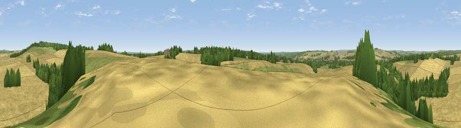

Viewpoint near Redlynch
#29064 in England · top 34% of its area beats it · near RedlynchThe view, rendered

A 360° render of this exact spot computed from the terrain model, tree cover and land cover — summer colours, afternoon light, calibrated against photographs of famous viewpoints. Real trees, hedges and buildings will differ in detail.
The panorama
Grey silhouette: terrain skyline in each direction (720 bearings, Earth curvature and refraction included). Dashed green: skyline with trees (+15 m) and buildings (+8 m) as obstacles. Blue strip: how far the ground is visible on each bearing.
Where the view opens
Wedge length = distance to the farthest visible ground on that bearing (vegetation-aware). Rings at 10, 25 and 50 km.
What fills the view
68% cropland · 17% grassland · 15% woodland ·
Angular shares of the visible panorama (visual magnitude), not map area. Landscape diversity 0.38 (0–1 Shannon).
Key numbers
More beautiful places nearby
The staircase of upgrades: each row has a higher view potential than everything closer. Driving times are estimates from straight-line distance, calibrated against real road routing — check an actual route before setting out.
| Place | Direction | Drive | Score |
|---|---|---|---|
| Viewpoint near West Grimstead | NNE · 2 km | ~5 min | 62.7 |
| Viewpoint near Martin | WSW · 16 km | ~28 min | 64.6 |
| Viewpoint near Cranborne | WSW · 17 km | ~29 min | 65.0 |
| Viewpoint near Bulford | N · 20 km | ~34 min | 70.3 |
| Monk's Down | W · 26 km | ~42 min | 74.4 |
| Viewpoint near Berwick St John | W · 27 km | ~43 min | 78.2 |
| West High Down | SSE · 39 km | ~58 min | 79.8 |
| Tennyson Down | SSE · 39 km | ~58 min | 83.2 |
51.00133, -1.72169 · source: screening · position refined by local search. Computed location — check access rights before visiting.